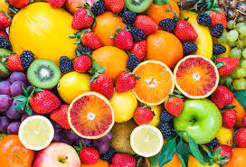
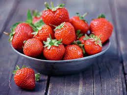

Frutas do paraná
Os benefícios de comer fruta são inúmeros. Elas têm vitaminas, minerais e antioxidantes, compostos que protegem as células contra o envelhecimento.
Frutas mais consumidas
- Laranja
- Banana
- Manga
- Morango
Frutas favoritas
Benefícios das frutas?
